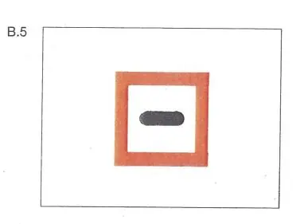

§ 6.28 Durchfahren der Schleusen
Rheinschiffahrtspolizeiverordnung
1. | Bei der Annäherung an die Schleusenvorhäfen müssen die Fahrzeuge ihre Fahrt verlangsamen. Können oder wollen sie nicht sogleich in die Schleuse einfahren, haben sie, wenn am Ufer das Tafelzeichen B.5 (Anlage 7) aufgestellt ist, vor diesem anzuhalten. |  |
2. | In den Schleusenvorhäfen und in den Schleusen müssen Fahrzeuge, die mit einer Sprechfunkanlage für den Verkehrskreis Nautische Information ausgerüstet sind, den Kanal der Schleuse auf Empfang geschaltet haben. | |
3. | Geschleust wird in der Reihenfolge des Eintreffens in den Schleusenvorhäfen. Kleinfahrzeuge sind nicht berechtigt, eine besondere Schleusung zu verlangen. Sie dürfen erst nach Aufforderung durch die Schleusenaufsicht in die Schleuse einfahren. Außerdem dürfen die Kleinfahrzeuge, wenn sie gemeinsam mit anderen Fahrzeugen geschleust werden, erst nach diesen in die Schleuse einfahren. | |
4. | Bei der Annäherung an die Schleusen, insbesondere in den Schleusenvorhäfen, ist das Überholen verboten. | |
5. | In den Schleusen müssen die Anker vollständig hochgenommen sein. Das gilt auch in den Schleusenvorhäfen, solange die Anker nicht benutzt werden. | |
6. | Bei der Einfahrt in die Schleusen müssen die Fahrzeuge ihre Geschwindigkeit so vermindern, daß ein Anprall an die Schleusentore oder an die Schutzvorrichtungen sowie an andere Fahrzeuge oder an Schwimmkörper vermieden wird. | |
7. | In den Schleusen | |
a) | haben sich die Fahrzeuge, sofern an den Schleusenwänden Grenzen markiert sind, innerhalb dieser Grenzen zu halten; | |
b) | müssen die Fahrzeuge während der Füllung und der Entleerung der Schleusenkammer und bis zur Freigabe der Ausfahrt festgemacht sein und die Befestigungsmittel derart bedient werden, daß Stöße gegen die Schleusenwände, die Schleusentore oder die Schutzvorrichtungen sowie gegen die anderen Fahrzeuge oder Schwimmkörper vermieden werden; | |
c) | sind Fender zu verwenden, die schwimmfähig sein müssen, wenn sie nicht fest mit dem Fahrzeug verbunden sind; | |
d) | ist es verboten, von den Fahrzeugen oder Schwimmkörpern Wasser auf die Schleusenplattformen, auf die anderen Fahrzeuge oder Schwimmkörper zu schütten oder ausfließen zu lassen; | |
e) | ist es verboten, nach dem Festmachen des Fahrzeugs bis zur Freigabe der Ausfahrt den Maschinenantrieb zu benutzen; | |
f) | müssen Kleinfahrzeuge Abstand zu den anderen Fahrzeugen halten. | |
8. | In den Schleusenvorhäfen und in den Schleusen muss zu Fahrzeugen und Verbänden, die die Bezeichnung nach § 3.14 Nr. 1 führen, ein seitlicher Abstand von mindestens 10 m eingehalten werden. Das gilt jedoch nicht für Fahrzeuge und Verbände, die die gleiche Bezeichnung führen und für die in § 3.14 Nr. 7 genannten Fahrzeuge. | |
9. | Fahrzeuge und Verbände, die eine Bezeichnung nach § 3.14 Nr. 2 oder 3 führen, werden allein geschleust. | |
10. | Fahrzeuge und Verbände, die das Kennzeichen nach § 2.06 tragen, dürfen nicht in eine Schleuse einfahren, wenn es außerhalb des LNG-Systems zu Freisetzungen von Flüssigerdgas (LNG) kommt oder wenn eine Freisetzung von Flüssigerdgas (LNG) außerhalb des LNG-Systems während der Schleusendurchfahrt zu erwarten ist. | |
11. | Fahrzeuge und Verbände, die die Bezeichnung nach § 3.14 Nr. 1 führen, werden nicht zusammen mit Fahrgastschiffen geschleust. | |
12. | Bei der Annäherung an die Schleusenvorhäfen, bei der Schleusung und dem Verlassen der Schleuse müssen die schnellen Schiffe ihre Geschwindigkeit so weit herabsetzen, dass jeder Schaden an Schleusen, Fahrzeugen oder schwimmenden Geräten und jede Gefahr für Personen an Bord der anderen Fahrzeuge oder schwimmenden Geräte oder an Land durch Wellenschlag vermieden wird. | |
13. | Die Schleusenaufsicht kann aus Gründen der Sicherheit und Leichtigkeit des Verkehrs, zur Beschleunigung der Durchfahrt oder zur vollen Ausnutzung der Schleusen Anordnungen erteilen, die diesen Paragraphen ergänzen oder von ihm abweichen. Die Fahrzeuge haben diese Anordnungen in den Schleusen und in den Schleusenvorhäfen zu befolgen. |